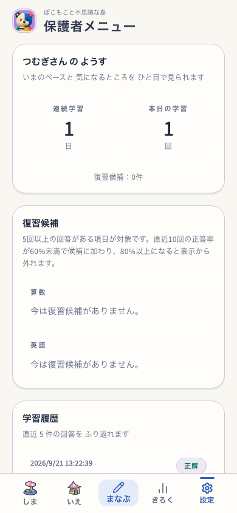
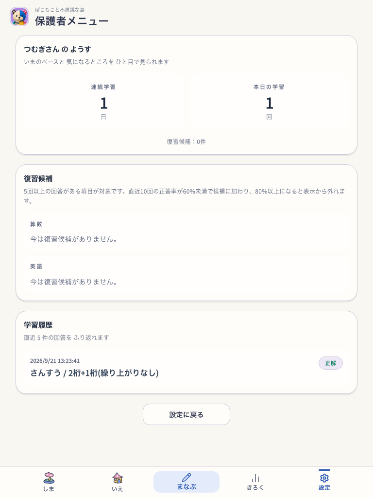
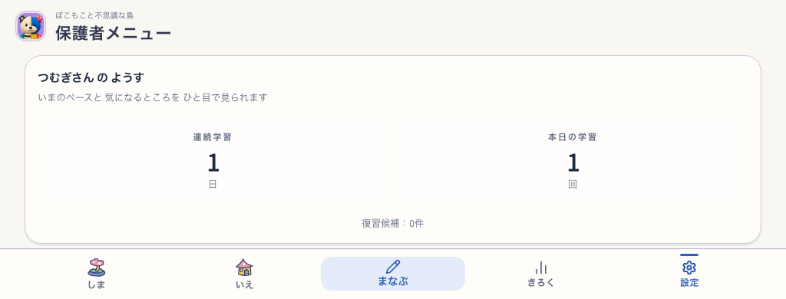

http://127.0.0.1:5198/#/parents · Island=true · Nature Town=false · buildRevision=development-local · shared Utility route (delivery/candidate は route-specific には非該当) · rootConfiguredDelivery=snap-root-v1 · reduced motion=true · service worker=false
親ゲートを通過した使い捨てE2E contextで撮影。全体の112 route/action checksと77 capturesはPASS。短い横画面では復習欄まで縦スクロールが必要で、物理タッチでの発見性は未評価。


